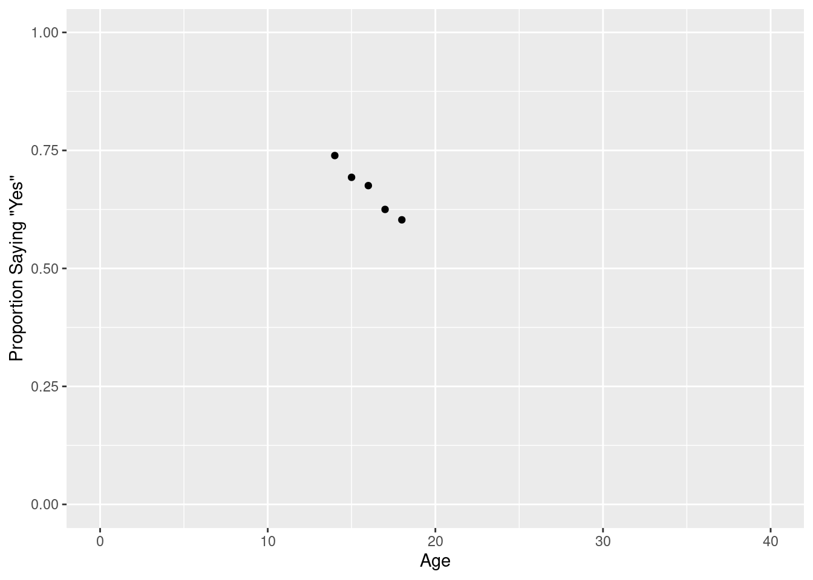
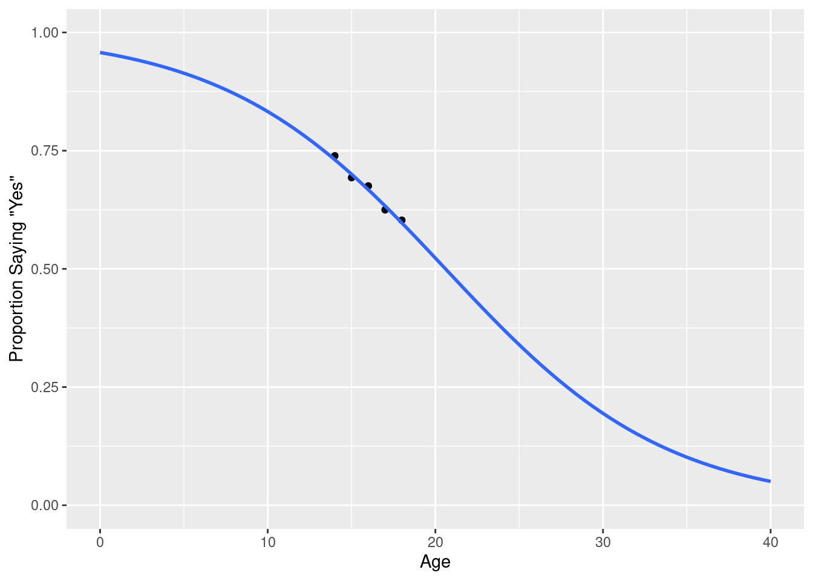
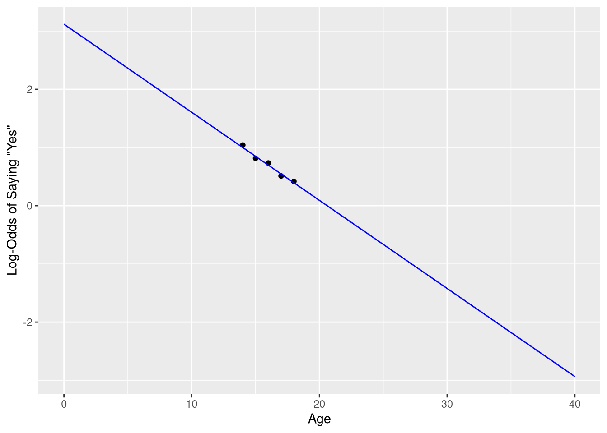
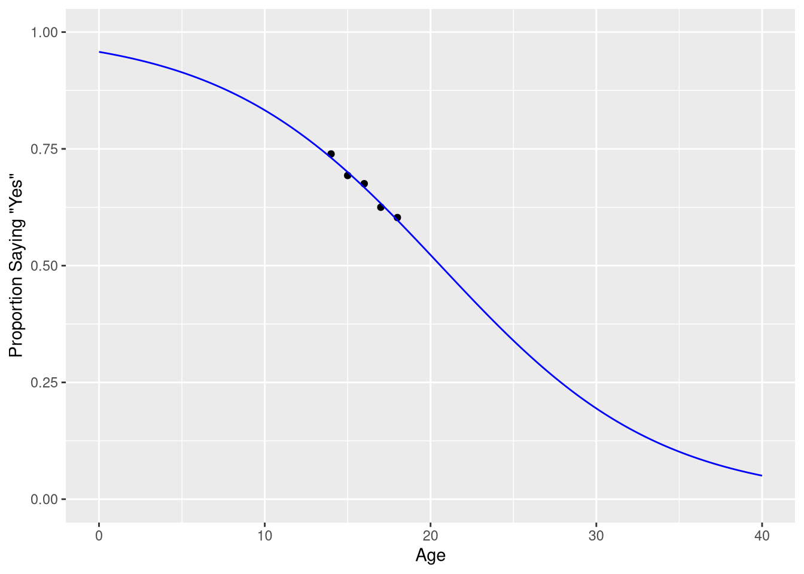
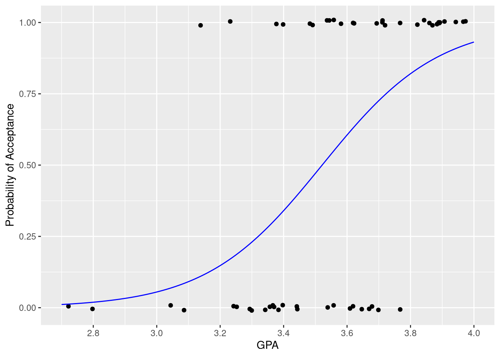

library(Stat2Data)
data("LosingSleep")5 Logistic Regression
5.1 Choosing a Logistic Regression Model
Chapter 9 introduces the topic of logistic regression though the lens of the question: “What is the relationship between a teenager’s age in years, and the chances of getting 7 or more hours of sleep a night”. In this situation, the outcome variable we seek to model and explain is a binary categorical variable; in other words, a variable that measures a categorical attribute that can only take on two possible values. “Getting 7 or more hours of sleep a night” is a binary categorical variable here because respondents were only allowed to give “yes” or “no” responses to the question.
The data collected from this survey are first summarized in a joint frequency table, showing the number of respondents who answered “Yes” and “No”, broken down into groups based on the respondents age. We could re-create the same table by first counting the number of rows with each possible combination of age (14,15,16,17, or 18) and hours slept (“Yes” = seven or more hours, “No” = less than seven hours).
library(dplyr)
sleep_counts <- LosingSleep |>
count(Age, Outcome) |>
mutate(Outcome = recode(Outcome, `0` = "No", `1` = "Yes"))
sleep_countsThen, we can re-arrange the table of counts from a “long” into a “wide” layout, just for the sake of presenting the results in compact form:
library(tidyr)
sleep_counts |>
pivot_wider(names_from = Age, values_from = n) |>
mutate(Outcome = recode(Outcome,
"No" = "Fewer than 7 hours",
"Yes" = "7 hours or more"
)
)The results are also visualized in a scatter plot, showing the relationship between the proportion of respondents saying “7 hours or more” for each age group. To reproduce this scatter plot, we must first compute these conditional probabilities; in other words, we have to compute the proportion of respondents saying “7 hours or more”, given the respondent is a particular age.
There are several ways to do this, but for reasons that will become clear in later sections, the best approach for us is to create one column holding the number of “Yes” responses for each age group, and one column holding the number of “No” responses for each age group. The, we’ll compute the probability of saying “Yes, I get 7 or more hours of sleep a night”, given a respondent has a particular age value, by taking the number of “Yes” values in each row, and dividing by the sum of the “Yes” and “No” responses in that row:
sleep_counts <- sleep_counts |>
pivot_wider(names_from = Outcome, values_from = n) |>
mutate(prob_7_or_more = Yes / (Yes + No))
glimpse(sleep_counts)Rows: 5
Columns: 4
$ Age <int> 14, 15, 16, 17, 18
$ No <int> 12, 35, 37, 39, 27
$ Yes <int> 34, 79, 77, 65, 41
$ prob_7_or_more <dbl> 0.7391304, 0.6929825, 0.6754386, 0.6250000, 0.6029412Then we can create a scatter plot showing the probability of responding “7 hours or more” for each age using ggplot,
library(ggplot2)
ggplot(data = sleep_counts,
mapping = aes(x=Age, y=prob_7_or_more)
) +
geom_point() +
scale_x_continuous('Age', limits = c(0,40)) +
scale_y_continuous('Proportion Saying "Yes"', limits = c(0, 1))
We will take the author’s advice, and not fit a linear regression model to these data. As a consequence, we will not demonstrate how to re-create Figure 9.2, as this figure is included in the book only to illustrate what not to do when modeling a binary outcome variable.
5.1.1 The Logistic Transformation
Rightfully, the next section begins with a visualization of the model you should fit to these data, a logistic regression model!

But before we learn about how to visualize the logistic model shown in Figure 5.1, we’ll learn about how to fit a logistic model.
To fit a logistic model, we’ll need to use a new R function; we’ll need to use the glm() function (as a opposed to the lm() function). The “g” in “glm” is short for “generalized”; logistic regression models are said to be an example of a “generalized” linear model. Below, we fit a logistic regression model that uses a teenager’s age to predict the probability they get 7 or more hours of sleep a night:
sleep_model <- glm(cbind(Yes, No) ~ Age, data = sleep_counts,
family = binomial
)Let’s take a moment to point out what is similar, and dissimilar, from our previous work fitting linear regression models with the lm() function.
| Similarity | Dissimilarity |
|---|---|
| Model structure still specified with a formula | Left-hand side of formula uses two variables |
| Must include data set as an argument | Must also include a family argument |
On the left hand side of our model formula, we have a two-column matrix: one column holds the number of “Yes” responses for each row in the data set, and one column holds the number of “No” responses for each row in the data set. If the data set you are using measures the binary categorical outcome using the number of observations that fell into each category, then you must supply both of the counts to the glm() function in order to fit the model.
The family=binomial argument is also crucial; this is what makes R understand that the two values on the left hand side of the formula don’t reflect two completely separate variables, but actually measure the number of observations falling into the “yes” and “no” response categories. In other words, the family=binomial variable is what tells R you are modeling a binary categorical outcome, instead of a continuous numeric outcome.
Fortunately, we can still find the fitted coefficients by summarizing the fitted model object:
summary(sleep_model)$coefficients Estimate Std. Error z value Pr(>|z|)
(Intercept) 3.1186375 1.33374817 2.338251 0.01937425
Age -0.1513594 0.08234823 -1.838041 0.06605631The regression table for a logistic regression tables looks extremely similar to the regression table for a linear regression, with the small difference that the hypothesis test for each coefficient is a based on a z distribution (i.e., a Normal distribution with mean=0 and standard deviation=1) instead of a t-distribution.
And, we can still say that our estimated outcome is a linear function of our fitted coefficients:
\[ \hat{y} = 3.12 + -0.15 \cdot Age \tag{5.1}\]
But, our \(\hat{y}\) is something entirely new! It’s not the estimated number of “Yes” responses, the estimated number of “No” responses, or the estimated probability of “Yes” response. Here, \(\hat{y}\) represents the estimated the log-odds of a “Yes” response:
\[ \hat{y} = ln\big(\frac{\pi}{1-\pi}\big) \tag{5.2}\]
Substituting Equation 5.2 into Equation 5.1 shows us that a linear combination of the explanatory variables used in a logistic regression predicts the log-odds of a “success” from the outcome variable:
cat("$$\n")$$cat(paste0("ln\\big(\\frac{\\pi}{1-\\pi}\\big) = ", betas[1], " + ", betas[2], " \\cdot Age\n"))ln\big(\frac{\pi}{1-\pi}\big) = 3.12 + -0.15 \cdot Agecat("$$\n")$$
Because of this, the equation for a logistic regression model is sometimes expressed as \(\widehat{logit(y)} = b_0 + b_1 \cdot x\), since logit() is a commonly used abbreviation for the log-odds transformation.
Figure 9.4 visualizes the observed data, and the logistic model’s predictions, on the log-odds scale. We can re-create this plot be 1) applying the logit transformation directly to our data, and 2) computing the model’s predictions across a fine grid of x-axis points using the broom::augment() function, and plotting the resulting predictions as a line.
First, we transform the observed probabilities into log-odds:
sleep_counts <- sleep_counts |>
mutate(log_odds = log(prob_7_or_more / (1-prob_7_or_more) ) )The, compute the model’s predictions on the log-odds scale as well
library(broom)
predicted_log_odds <- augment(sleep_model,
newdata = data.frame(Age = seq(0, 40, by=.1))
)
predicted_log_oddsFinally, we create a scatter plot using the log-odds, and draw a line representing the model’s predictions for each Age value along the x-axis. Notice that the predicted_log_odds data frame is passed to the geom_line() function as a layer-specific data frame.
ggplot(data = sleep_counts,
mapping = aes(x=Age, y=log_odds)
) +
geom_point() +
geom_line(mapping = aes(y=.fitted),
data = predicted_log_odds,
color = "blue"
) +
scale_x_continuous('Age', limits = c(0,40)) +
scale_y_continuous('Log-Odds of Saying "Yes"')
However, visualizing your data and model on the log-odds scale is often not very informative, as the log-odds scale is a very abstract measurement scale. Usually, it is preferable to measure your model’s prediction on the probability scale. You can transform values on the log-odds scale into the probability scale using the logistic function:
\[ \frac{1}{1 + e^{\hat{y}}} \]
where \(\hat{y} = b_0 + b_1 \cdot x\), i.e., where \(\hat{y}\) are your model’s predictions on the log-odds scale.
We don’t have to apply this transformation “manually” before plotting - we can ask the augment() function to apply it for us by using the type.predict argument to ask it to compute the model’s predictions to be on the “response” scale (i.e., the same measurement scale as the original data).
predicted_probabilities <- augment(sleep_model,
newdata = data.frame(Age = seq(0, 40, by=.1)),
type.predict = "response"
)
predicted_probabilitiesNotice how the values in the .fitted are all between 0 and 1 - consistent with the probability scale of measurement. We can visualize these predictions, along with the observed probabilities, using a similar approach as taken in Figure 5.2.
ggplot(data = sleep_counts,
mapping = aes(x=Age, y=prob_7_or_more)
) +
geom_point() +
geom_line(mapping = aes(y=.fitted),
data = predicted_probabilities,
color = "blue"
) +
scale_x_continuous('Age', limits = c(0,40)) +
scale_y_continuous('Proportion Saying "Yes"', limits = c(0, 1))
5.1.2 Example 9.4
Example 9.4 explores a regression model that uses college GPA to predict the probability a medical school applicant is accepted to medical school. The purpose of this example in the text is to explain how to convert log-odds of acceptance into the probability of acceptance using the logistic function. However, here we focus on how to fit and visualize this model in R, because the MedGPA data set is structured differently than the LosingSleep data set.
data("MedGPA")
MedGPAIn this data set, the outcome variable is once again a set of 0’s and 1’s, representing “not admitted” and “admitted”, respectively. In the previous example, with the LosingSleep data set, we converted these 0’s and 1’s to category labels, and counted the number of “Yes” answers for each age. This was a sensible way to summarize and explore the data, since the explanatory variable (age) was a discrete variable; it was natural to divide the “Yes” or “No” outcomes into groups based on the age variable.
But here, the explanatory variable is a continuous variable; there is no natural way to group the observations based on GPA when the GPA values are continuous values like 3.34, and 3.35, and 3.36. It doesn’t make conceptual sense to treat 3.34 as a separate group of GPA values than 3.35. At first glance, this seems to present a practical problem: how can we fit a logistic model in R if we can’t count the number of “success” and “failures” for each GPA value?
Luckily, this step of counting the number of “success” and “failures” for each value of the explanatory variable isn’t a necessary step. We can use the “raw” 0 and 1 values as our outcome variable in our model formula!
acceptance_logistic_model <- glm(Acceptance ~ GPA, data = MedGPA,
family = binomial
)
summary(acceptance_logistic_model)$coefficients Estimate Std. Error z value Pr(>|z|)
(Intercept) -19.206503 5.628726 -3.412229 0.0006443386
GPA 5.454166 1.579169 3.453821 0.0005527051The family = binomial argument is once again necessary to tell R that these 0’ and 1’s don’t represent quantities, but actually values that represent different categorical outcomes. Let’s check that we obtain the same fitted regression mode that the authors do
library(equatiomatic)
extract_eq(acceptance_logistic_model, use_coefs = TRUE)\[ \log\left[ \frac { \widehat{P( \operatorname{Acceptance} = \operatorname{1} )} }{ 1 - \widehat{P( \operatorname{Acceptance} = \operatorname{1} )} } \right] = -19.21 + 5.45(\operatorname{GPA}) \]
We do! We can also re-create Figure 9.8b using the same technique we used to create Figure 5.3:
predicted_probabilities <- augment(acceptance_logistic_model,
newdata = data.frame(GPA = seq(2.7, 4, by=.01)),
type.predict = "response"
)ggplot(data = MedGPA,
mapping = aes(x=GPA, y=Acceptance)
) +
geom_jitter(height = .01) +
geom_line(mapping = aes(y=.fitted),
data = predicted_probabilities,
color = "blue"
) +
scale_x_continuous('GPA', limits = c(2.7, 4),
breaks = seq(2.8, 4, by=.2)
) +
scale_y_continuous('Probability of Acceptance')
Each observed “success” is represented by a point at y=1, and each observed “failure’ is represented by a point at y=0. The logistic curve in blue shows how the estimated probability of acceptance increases as GPA increases.